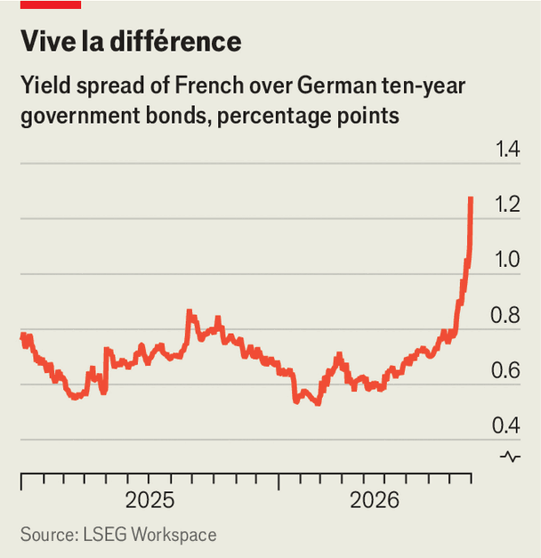

Bond markets whack France for fiscal irresponsibility
Political risk brings economic pain
Oct 1st 2026
FRANCE’S MESSY politics are spooking the bond markets. On September 29th the yield on ten-year bonds rose to 4.8%, its highest level since 2008. The surge in borrowing costs pushed the spread between French ten-year bonds and German Bunds up by 50 basis points in September, to 128 points—the highest level for 14 years. France now pays more to borrow than Greece and Italy, once the euro zone’s most worrisome members. It is increasingly looking like the currency area’s biggest problem, and things could get worse.
France has no difficulty issuing sovereign debt. But the steep rise in yields reflects two particular worries. The first is that France’s minority government may struggle to control the deficit in the budget for 2027, which was unveiled on October 1st. The second is that the prospect of fiscal consolidation is becoming ever more remote, with a presidential election next spring that may be won by a populist who would govern still more irresponsibly.

In his budget Sébastien Lecornu, the centrist prime minister, promised €54bn ($61bn) of savings. These will come from such measures as a freeze on higher-rate pensions. He is extending for a third year a surcharge on big companies (initially presented as a one-off), albeit at a reduced rate. Almost all departments face a squeeze. Only spending on defence has been ring-fenced.
Roland Lescure, the finance minister, described such plans as “ambitious”. Yet the savings promised will merely keep the deficit at 5% of GDP, well over the European Commission’s 3% cap. It will be the fifth consecutive year that France’s deficit has been at or over 5%. Moreover, there is no guarantee that, as the budget goes through parliament in the coming months, the fragmented lower house and rivalrous opposition parties will agree to even these limited savings. Marine Le Pen, leader of the populist-right National Rally and the polling favourite for the presidential election, says her party will vote against any attempt to touch pension payments.
The government has been boxed in partly by disappointing growth. The budget for 2026 was based on expected GDP growth of 1%, and a budget deficit of 5% of GDP. In September, however, the government halved its growth forecast and conceded that the deficit would be closer to 5.4% of GDP. Rising borrowing costs have aggravated matters. The government expects debt-servicing costs to reach €91bn in 2027, up from €79bn this year.
The prospect of near-term fiscal consolidation is in shreds. France had originally promised to respect the deficit rules by 2029. That commitment “no longer looks credible”, note analysts at ING, a bank. Nor will the current fiscal effort be enough to stabilise public debt. It is forecast to rise from 119% of GDP in 2026 to 122% in 2027.
The run-up to the two-round presidential election is unlikely to calm matters. Polls suggest the run-off could be a choice between the two extremes: Ms Le Pen on the populist right and Jean-Luc Mélenchon on the populist left. Neither has credible fiscal plans. Ms Le Pen promises to fix the public finances, but her remedies, such as halving France’s contribution to the European Union budget, are impractical. Mr Mélenchon’s suggestion for solving the debt problem is to “burn” part of it.
Mr Lecornu has no good options. If he gives ground on his spending cuts in the coming weeks, he will struggle to keep even to his own deficit target. If he tries to force the budget through without a vote, his government could be toppled—as those of his two predecessors were. Eurasia Group, a risk consultancy, currently puts at 35% the probability that the government will fall this autumn. “Such an accumulation of political and budgetary risk raises fears that the risk premium on France may rise further,” wrote Bruno Cavalier, chief economist at Oddo BHF, an investment firm in Paris, in a research note.
If the government fails to get its budget through parliament by the end of the year, the spread over German Bunds could widen further. The current rise in interest rates seems to be a rational repricing of French fiscal risk, but a higher spread may make investors worry about the euro zone more broadly. Analysts reckon that the European Central Bank has no intention of intervening to help France as long as the spread over Bunds is below two percentage points. But that would still leave France’s government with painfully high rates, even if voters seem wilfully unbothered. ■